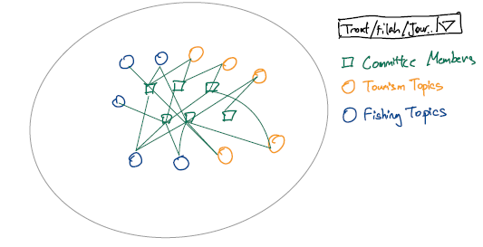

| Action & Task | PIC | Date By |
|---|---|---|
| Network analysis: node-link diagram & summary stats | Jia Yi | 2025-06-14 |
| Geographic analysis: travel clustering & mapping | Jesse Lucas | 2025-06-14 |
| Sentiment heatmap & drill-down implementation | Sari | 2025-06-14 |
| Integrated Shiny dashboard assembly & testing | All (Jesse, Jia Yi, Sari) | 2025-06-18 |
Project Proposal
Project Proposal: Visual Analytics for Government Accountability in Oceanus
1.0 Introduction
In this project, we tackle Mini-Challenge 2 of the 2025 IEEE VAST Challenge (VAST Challenge MC2), which provides three JSON‑based knowledge graphs—TROUT (Tourism Raises OceanUs Together), FILAH (Fishing Is Living and Heritage), and an independent journalist dataset—alongside a GeoJSON file oceanus_map.geojson (administrative basemap) and road_map.json (road/travel network). Together, these datasets capture the Commission on Overseeing the Economic Future of Oceanus (COOTEFOO) members’ meeting participation, travel records, and discussion transcripts within their spatial context. By integrating and analyzing these interlinked sources, we will uncover network structures, spatial clustering, and sentiment trends that offer transparent, data‑driven insights into potential bias.
2.0 Motivation
The COOTEFOO faces serious accusations of bias from two opposing interest groups: FILAH and TROUT . Journalist Edwina Darling Moray needs robust visual analytics tools to investigate these claims and uncover the truth about potential bias in government oversight. This project addresses a critical need for transparency in government accountability through data-driven journalism.
3.0 Problems and Issues to Address
Primary Challenge: Determining whether COOTEFOO members exhibit systematic bias toward fishing or tourism industries based on their meeting participation, travel patterns, and decision-making behaviors.
Specific Issues:
Incomplete Data Perspectives: TROUT and FILAH datasets each capture only a subset of COOTEFOO’s engagements, potentially risking skewed conclusions. Reconciling these partial views against a more complete dataset by Journalist Edwina Darling Moray is needed.
Complex Relationship Analysis: Understanding connections between committee members, organizations, and geographic locations across multiple datasets. We need to surface clusters of members and topics to reveal chambers forming around fishing or tourism interests.
Multi-dimensional Bias Assessment: Evaluating bias across different types of activities (meetings, travel, voting patterns) will allow us to pinpoint not only whether bias exists but how and where it arises from.
5.0 Proposed Approach
In addition to exploratory data analysis on the respective data sets we propose the four complementary visual‐analytics modules below. Each visualisation is to address a different facet of bias detection in COOTEFOO’s activity. Each subsection includes a narrative description and a sketch before implementing it via code in R.
5.1 Network Analysis of Members, Topics, and Plans
We will build a node‐link diagram of COOTEFOO members, discussion topics, and plans, augmented by summary statistics to surface patterns of engagement.
Objectives
Identify which members engage most heavily with fishing vs. tourism topics.
Highlight clusters of topics or plans that attract similar participants (potential “echo chambers”).
Compute and display counts of discussions and plans per member–topic pair to detect asymmetric attention.
Visualization
Force‐directed graph (with
ggraph): nodes = persons, topics, plans; edges = “participant” and “about” relations; color by industry.Bar chart / dot plot: counts of discussions by member and by topic.
Sketch:

5.2 Geographic Analysis of Travel Patterns
We will map official trips and cluster travel endpoints to detect spatial bias in where members go.
Objectives
Show geographic distribution of fishing- vs. tourism-related visits.
Identify clusters (e.g. fishing sites vs. tourist attractions) via unsupervised methods.
Overlay COOTEFOO trips on a basemap of Oceanus.
Visualization
Choropleth or point map with
sf+ggplot2ortmap.DBSCAN clusters colored by industry and labelled.
Sketch:
5.3 Sentiment Heatmap by Member and Industry
We will summarize the sentiment of each member’s contributions across industries in a heatmap, with drill-down details available on demand.
Objectives
Quantify and compare average sentiment (e.g. –1 to +1) for each member in fishing and tourism contexts.
Reveal extreme stances or consistent positivity/negativity.
Support drill-down to underlying “reason” given by members in dataset.
Visualization
Heatmap (
geom_tile) of members (y‐axis) vs. industry (x‐axis), colored by mean sentiment.Interactive drill-down via
plotlyorshiny: clicking a cell shows a table of comments and reasons.Sketch:
5.4 Integrated Interactive Dashboard
Finally, we tie together network, map, and heatmap in a single Shiny dashboard so users can filter by member or industry and see all views update in concert.
Objectives
Enable selection of one or more members (or entire committee).
Synchronize network, map, and heatmap panels.
Provide pop-up detail panels for individual plans, discussions, and travel records.
Visualization
Shiny app with
fluidRowof three panels: network (ggraphOutput), map (leafletOutput), heatmap (plotlyOutput).Sidebar controls for member, industry, date range.
Sketch:
6.0 Scope of Work
7.0 Expected Outcomes
Upon completion, this project will deliver a cohesive, interactive visual analytics platform that enables Ms. Moray to:
- Objectively assess bias allegations against COOTEFOO members by triangulating network, spatial, and sentiment metrics.
- Reveal systematic patterns of favoritism or neglect across topics, geographic locations, and member contributions.
- Demonstrate the influence of incomplete or partial datasets on public perceptions of committee behavior.
- Produce clear, evidence-based narratives that support transparent and accountable journalism.
Beyond Oceanus, this platform will serve as a reusable template for data-driven investigative reporting and government oversight visualization, with broad applicability to other contexts demanding transparency and equity.